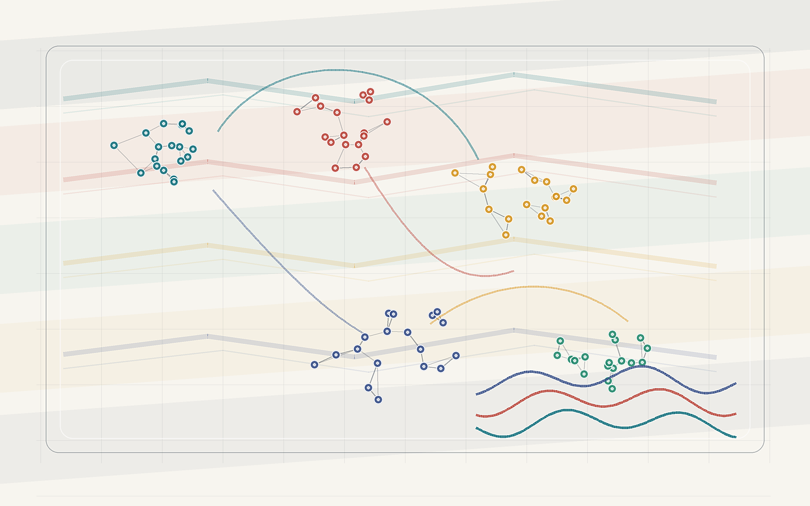

Yang Liu
Assistant Professor
Institute of Statistics and Big Data
Renmin University of China
59 Zhongguancun Street, Beijing 100872, China
Email:
yangliu2022@ruc.edu.cn
Office: Room 718, Chongde West Building
Bio
I am currently an Assistant Professor at the Institute of Statistics and Big Data, Renmin University of China. My research focuses on adaptive design for clinical trials and A/B testing problems, including the development of biostatistical methods following adaptive designs, experimental design, and statistical inference for spatial and temporal experiments.
I am a 95% RUCer: I grew up on the Zhongguancun campus of Renmin University of China and obtained my B.S. in Statistics from the School of Statistics at RUC. I was also very fortunate to spend seven years in the Department of Statistics at George Washington University for my M.S. and Ph.D. degrees, where I was advised by Prof. Feifang Hu.
I used to be a tuba player in RDFZ's marching band and symphony orchestra, and I was selected as chair of the Youth Orchestra of Renmin University of China from 2013 to 2014.
Research Interests
-
Adaptive design
- Covariate-adaptive randomized experiments
- Response-adaptive randomization
- Covariate-adjusted response-adaptive randomization
-
Design and analysis of randomized controlled trials
- Unobserved covariates and covariate balance
- Heterogeneous treatment effects
- Longitudinal studies following adaptive randomization
-
Online experiments and platform experiments
- Network A/B testing with cluster structures
- Spillover effects and interference
- Spatial and temporal adaptive experiments
- Biostatistics and applications in medicine, healthcare, and online platforms
Selected Awards and Professional Activities
- Research Collaboration Outstanding Exploration Award, Meituan, 2025.
- National Natural Science Foundation of China, Young Scientist Program, 2024-2026.
- Council Member, The Uniform Design Association of China, Chinese Mathematical Society, 2025-present.
- Council Member, Division of Tourism and Big Data, Chinese Association for Applied Statistics, 2025-present.
- Council Member, Association of Young Statisticians, Chinese Association for Industrial Statistics, 2024-present.
- Outstanding Graduate Award, Washington Statistical Society, 2022.
Selected Publications
Full list of publications- Zhao, F., Liu, Y., and Hu, F. (2025). Statistical inference on the relative risk following covariate-adaptive randomization. Biometrics, 81(2), 1-12.
- Guo, Z., Liu, Y., and Xia, L. (2025). Covariate selection for optimizing balance with covariate-adjusted response-adaptive randomization. Statistical Methods in Medical Research, 0(0), 1-29.
- Liu, Y., Xia, L., and Hu, F. (2025). Testing heterogeneous treatment effect with quantile regression under covariate-adaptive randomization. Journal of Econometrics, 249, 105808.
- Liu, Y., Zhou, Y., Li, P., and Hu, F. (2024). Cluster-adaptive network A/B testing: From randomization to estimation. Journal of Machine Learning Research, 25(170), 1-48.
- Liu, Y. and Hu, F. (2023). The impact of unobserved covariates on covariate-adaptive randomized experiment. The Annals of Statistics, 51(5), 1895-1920.